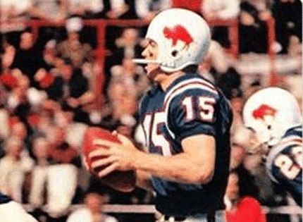

The Bills were established in 1960, in the American Football League (AFL). They played in this league for 10 years before the NFL-AFL merger in 1970. In that time, the Bills won 3 AFL Eastern Division championships in 1964, 1965, and 1966, and won 2 AFL League Championships in 1964 and 1965. These two championships were won with the help of quarterback Jack Kemp and head coach Lou Saban. The team didn't adopt the standing buffalo logo until 1962, and after changes in the uniforms' stripes in 1964 and 1965, the more recognizable jerseys seen below were used.
The 1960s